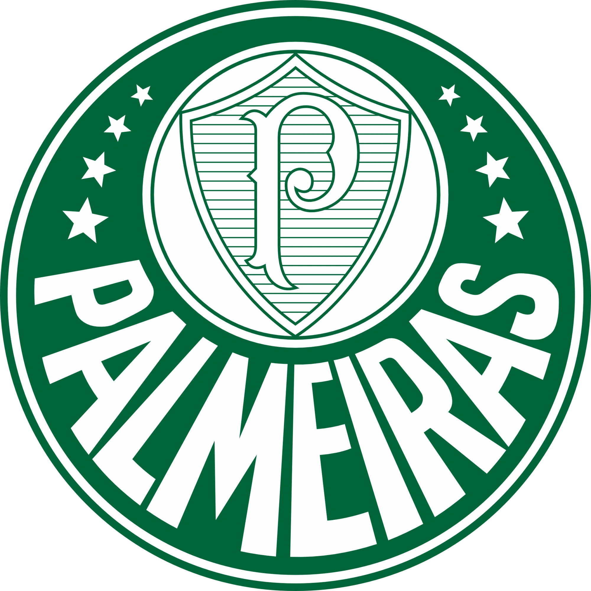

MAIOR CAMPEÃO DO BRASIL
Tradição, raça e glória eterna.

Tradição, raça e glória eterna.
O Palmeiras nasceu em 1914, na cidade de São Paulo, com o nome de Palestra Italia. O clube foi fundado por imigrantes italianos que buscavam criar uma equipe que representasse sua comunidade, além de fortalecer seus laços culturais em um período de grande crescimento da cidade.
Desde os primeiros anos, o clube já mostrava força no futebol paulista, conquistando respeito e rivalidade com grandes equipes da época. A paixão dos torcedores crescia junto com o time, que rapidamente se tornava uma das potências do estado.
Durante a Segunda Guerra Mundial, o Brasil rompeu relações com países do Eixo, o que obrigou o clube a mudar de nome. Em 1942, após um momento histórico marcante, o Palestra Italia passou a se chamar oficialmente Palmeiras. Mesmo com a mudança, o clube manteve sua identidade e tradição, iniciando uma nova fase de sua história.
Nas décadas seguintes, o Palmeiras se consolidou como uma das maiores forças do futebol brasileiro, conquistando títulos importantes e formando equipes históricas. O clube ficou conhecido por sua competitividade, força coletiva e por sempre disputar campeonatos em alto nível.
Na era moderna, o Palmeiras passou por reformulações importantes, se estruturando financeiramente e esportivamente. Esse processo trouxe de volta o clube ao topo do futebol sul-americano, com conquistas como a Copa Libertadores e títulos nacionais expressivos.
Hoje, o Palmeiras é um dos clubes mais vitoriosos do Brasil, com uma torcida apaixonada e um dos estádios mais modernos do país, o Allianz Parque. Sua história é marcada por superação, tradição e uma busca constante por títulos e protagonismo no futebol mundial.
Brasileirões
Libertadores
Copa do Brasil
Copa Rio